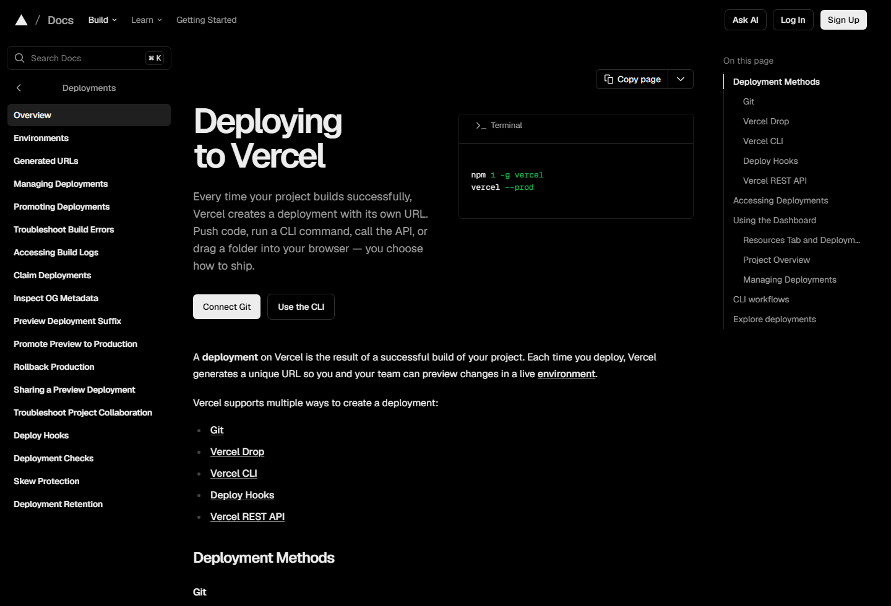
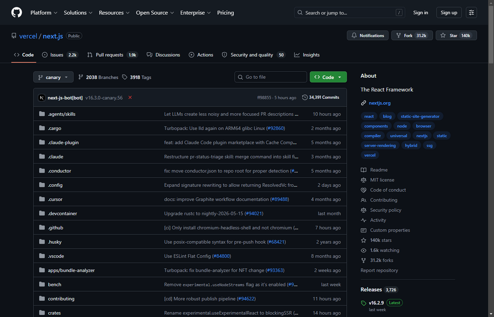
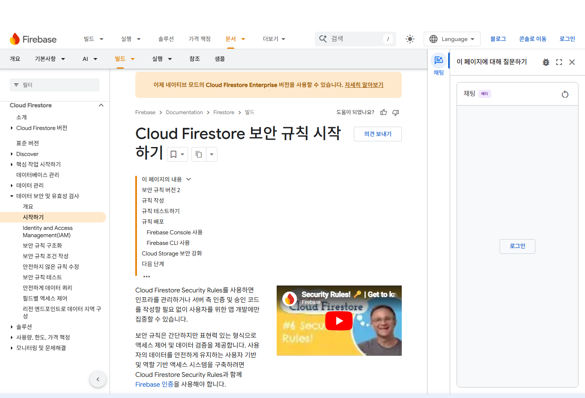

1
배포
내 노트북의 프로젝트를 빌드해 인터넷에 올리고, 주소로 공개합니다.
Git으로 남기고, 비밀값을 분리하고, 공개 URL에서 다시 확인합니다.


누구나 주소로 접속할 수 있습니다.
내 노트북의 프로젝트를 빌드해 인터넷에 올리고, 주소로 공개합니다.
브라우저에 내려가는 것과 서버에 숨길 것을 나누고, 비밀값을 지킵니다.
새로고침해도 남는 정보를 저장하고, 누가 무엇을 볼 수 있는지 정합니다.
실습 중심 바이브코딩 클래스
지금은 내 노트북 안에서만 열립니다.
누구나 주소로 접속하는 같은 프로젝트
배포는 화면을 바꾸는 일이 아닙니다. 같은 프로젝트를 내 노트북 밖의 실행 환경으로 옮겨, 주소를 가진 사람이 접속하게 만드는 일입니다.
"배포가 안 돼요"의 절반은 빌드 단계에서 막힙니다. 내 PC에서 npm run build가 먼저 통과하는지 확인하세요.
.env.local은 GitHub에 안 올라갑니다. 배포 서비스 설정에 따로 넣어야 합니다.
Button.jsx ↔ button.jsx. 내 PC는 통과해도 리눅스 서버는 구분합니다.
dev에선 숨겨지던 타입·import 오류가 build에서 드러납니다.
로컬에서 npm run build → 환경변수 채우기 → 배포 로그 확인. 이 순서가 "되는데 안 돼요"를 대부분 해결합니다.
On branch main\nChanges not staged for commit:\n modified: src/components/ApplyButton.jsx
기록하기 전, 어떤 파일을 AI가 수정했는지 확인하는 안전장치입니다.
아직 GitHub 페이지에는 없습니다. 내 컴퓨터 안의 변경입니다.
status는 내 PC의 변경, commit은 저장 지점, push 뒤에는 GitHub의 Commits 탭에서 그 기록을 확인합니다.
실패한 배포는 공개되지 않고 직전 버전이 그대로 살아 있습니다. 그래서 자주, 작게 push하는 것이 안전합니다.
도메인은 간판 이름, DNS는 내비게이션입니다. HTTPS 자물쇠와 인증서는 배포 서비스가 무료로 자동 붙여줍니다.
도메인은 간판, DNS는 내비게이션, HTTPS는 봉인된 택배입니다.
₩ 39,000 · 1인 1회 신청
Request URL https://api.vibe.example.com/checkout
Status Code 200 OK
Authorization 선택한 요청의 헤더를 확인합니다.
const paymentSecret = "sk_live_51ExampleOnly";브라우저에 내려온 코드라면 누구나 볼 수 있습니다.VITE_API_BASE_URL=https://api.example.com
PAYMENT_SECRET=sk_live_••••••••
DATABASE_URL=postgres://••••••••내 컴퓨터의 실제 값입니다. GitHub에 올리지 않습니다.
실제 값은 배포 서비스 설정에서 별도로 입력합니다.
주소(공개)는 알려줘도 되지만, 현관 비밀번호(비밀)는 절대 안 됩니다. 둘 다 정보지만 성격이 다릅니다.
"이 값이 브라우저에 보여도 괜찮은가?" — 아니오면 무조건 서버 환경변수로 옮깁니다.
출입증으로 들어오는 것(인증)과, 갈 수 있는 층(인가)은 다릅니다. 로그인했다고 모든 층에 가는 건 아닙니다.
로그인만 확인하고 권한 검사를 빠뜨리면, 로그인한 누구나 남의 데이터를 볼 수 있게 됩니다.
01 match /orders/{id} {
02 allow read: if request.auth.uid == resource.data.uid;
03 }
match /orders/{id} { allow read: if request.auth.uid == resource.data.uid;}비회원은 모두가 봐도 되는 정보만 볼 수 있습니다.
Vercel은 repository를 build해 웹 화면과 공개 URL을 제공합니다.
Vercel은 repository를 연결해 빌드하고, 공개 URL을 만들어 웹 화면을 서비스합니다.
1 멈춤어느 단계에서 멈췄는지 확인합니다2 복사빨간 Error 줄과 파일 경로 전체3 질문AI에게: 상황 + 명령어 + 에러 전문4 수정제안된 파일을 확인하고 적용5 재배포다시 push → 로그가 통과하는지 확인에러 메시지는 혼내는 말이 아니라 어디가 막혔는지 알려주는 이정표입니다. 그대로 복사해서 AI에게 주세요.
Vercel·Firebase 모두 개인 프로젝트는 무료 한도로 충분히 시작할 수 있습니다.
방문자·DB 읽기쓰기·저장 용량이 무료 한도를 넘으면 그때부터 과금됩니다.
꼭 필요한 정보만 받고, 비밀번호는 직접 저장하지 말고 로그인 서비스에 맡깁니다.
중요한 데이터는 내보내기로 주기적으로 백업해 둡니다.
시작을 누르면 release 기준점부터 공개 URL까지 진행됩니다.
공개 URL에서 실제 기능을 확인합니다.
실제 공개 URL에서 다시 확인합니다.
오늘 배운 흐름을 내 프로젝트에 적용해 보세요.
완성한 프로젝트를 함께 보고, 서로의 요청 방식과 결과물을 피드백합니다.